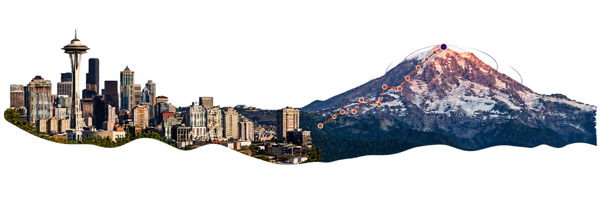
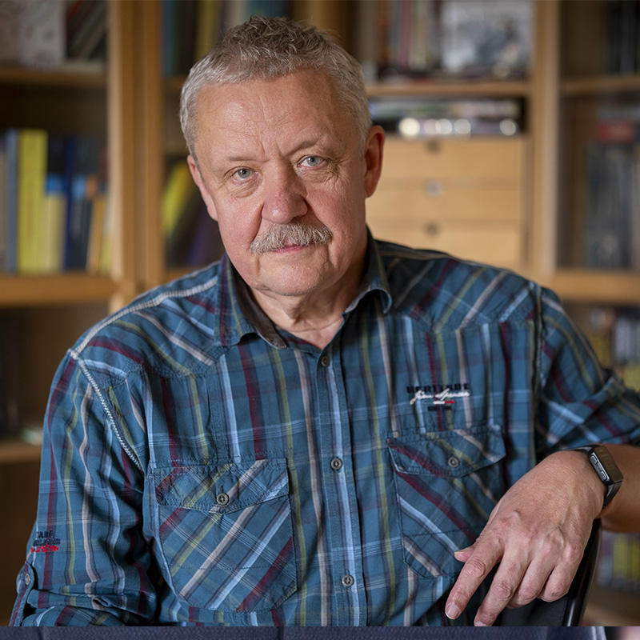
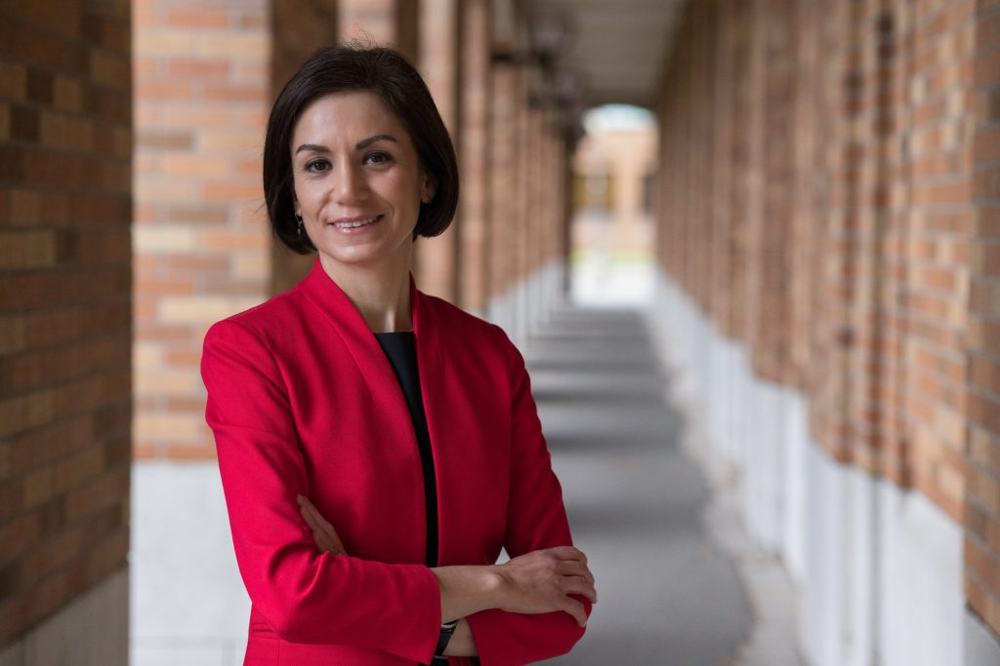
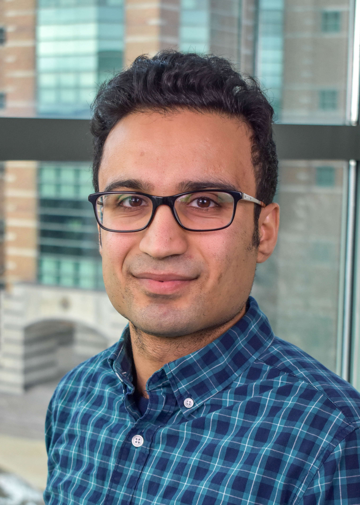
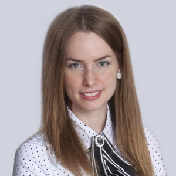
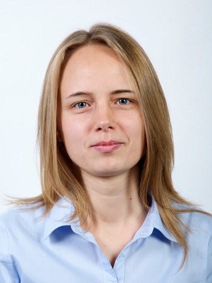

Learning
Optimization
Control
University of Washington
Seattle, Washington
Add to calendar
About
“How ideas move between learning, optimization, and control.”
The Workshop on Learning, Optimization, and Control brings together researchers working at the interface of machine learning, mathematical optimization, and control theory. Over two days at the University of Washington, invited talks and open discussion will examine how ideas move between these fields: learning-enabled control and decision-making, optimization methods for learning and control synthesis, and the analysis of data-driven dynamical systems.
The workshop is invitation-based and held in person in Seattle, with select remote presentations. It is organized in collaboration with European partner institutions.
RSVP
Attendance is by invitation and seating is limited. If you plan to join us, please RSVP by Tuesday, October 20, 2026.
Speakers

Corvinus University of Budapest and UCLouvain
Title to be announced (online)

Electrical & Computer Engineering, University of Washington
Title to be announced


Aeronautics & Astronautics, University of Washington
Generative Models for Stochastic Filtering and Control

Corvinus University of Budapest
New Perspectives in Interior-Point Algorithms I (online)

Corvinus University of Budapest
New Perspectives in Interior-Point Algorithms II (online)
Additional speakers will be announced as invitations are finalized.
Program
| Time | Speaker | Title |
|---|---|---|
| 9:30 AM | Mehran Mesbahi | Opening remarks |
| 9:45 AM | Petra Renáta Rigó | New Perspectives in Interior-Point Algorithms I (online) |
| 10:15 AM | Marianna E.-Nagy | New Perspectives in Interior-Point Algorithms II (online) |
| 10:45 AM | Break | |
| 11:00 AM | Péter Baranyi | Neural Mesh in Control |
| 11:30 AM | Ádám Csapó | Title to be announced |
| 12:00 PM | Lunch | |
| 1:00 PM | Maryam Fazel | Title to be announced |
| 1:30 PM | Session | Short talks by postdoctoral and student researchers (lineup to be announced) |
| 3:30 PM | Reception | |
| Time | Speaker | Title |
|---|---|---|
| 9:00 AM | Informal discussions over breakfast | |
| 10:30 AM | Amir Taghvaei | Generative Models for Stochastic Filtering and Control |
| 11:15 AM | To be announced | To be announced |
| 3:00 PM | Yurii Nesterov | Title to be announced (online) |
Times are preliminary and may shift slightly as the program is finalized.
Venue & travel
Directions and parking details to follow.
Organizers

Support
The workshop is supported by the University of Washington and international partner institutions.
Funding acknowledgment to be finalized.
Contact
For questions about the workshop, participation, or travel: mesbahi@uw.edu | sshakeri@uw.edu